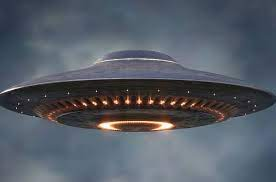

Pijamas "El dulce sueño" | ||
|---|---|---|
| Inicio | Galeria | Contacto |
| El término objeto volador no identificado, más conocido por el acrónimo ovni,2nota 1 se refiere a la observación de un objeto volador, real o aparente, que no puede ser identificado por el observador y cuyo origen sigue siendo desconocido después de una investigación.
El acrónimo fue creado para reemplazar al de «platillo volante», ya que a diferencia de este un ovni no tiene por qué ser necesariamente un objeto tecnológico o tripulado (puede ser también una estrella, un meteorito o un avión desconocido), y ha llegado a trascender más allá de las simples observaciones aéreas. Aunque autores como Erich von Däniken o Jacques Vallée han apuntado que los antiguos carros de los dioses o las apariciones y raptos en bosques y pantanos podían ser el equivalente a los relatos ovni actuales, el fenómeno comenzó en 1947, íntimamente vinculado a los medios de comunicación. |  | |
| pie depagina | ||